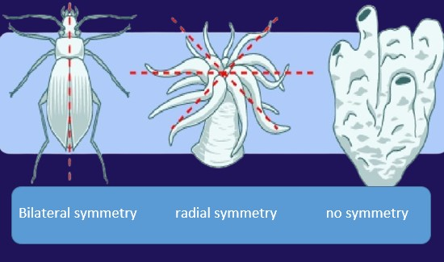
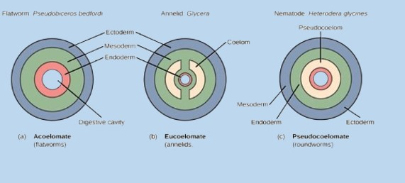

A body plan refers to the fundamental structural organization of an animal. It's the blueprint that determines an organism's basic shape, arrangement of its tissues, and the presence or absence of a body cavity and segmentation. Understanding body plans helps us classify animals and infer their evolutionary history and ecological adaptations.
Body Symmetry
Symmetry describes the balanced distribution of duplicate body parts or shapes. In biology, it refers to the arrangement of an organism's body structures relative to a central axis or plane.
-
Asymmetry:
- Description: Lacking any definite symmetry. The body cannot be divided into mirror-image halves along any plane.
- Example: Sponges (Phylum Porifera).
- Adaptation: Often characteristic of sessile (immobile) or very simple organisms, where there's no particular advantage to directed movement or sensing in one direction.
-
Radial Symmetry:
- Description: Body parts are arranged concentrically around a central oral-aboral (mouth-opposite mouth) axis. Any plane passing through this central axis divides the organism into two mirror-image halves.
- Examples: Cnidarians (jellyfish, sea anemones, hydras), Ctenophores (comb jellies), and adult Echinoderms (starfish, sea urchins – secondarily radial from a bilaterally symmetrical larva).
- Adaptation: Common in sessile or slow-moving aquatic organisms. Allows for sensing and responding to stimuli equally from all directions (e.g., detecting prey or predators approaching from any side).
-
Bilateral Symmetry:
- Description: The body can be divided into two roughly mirror-image halves (left and right) by only one sagittal plane passing through the midline.
- Examples: Most complex animals, including flatworms, mollusks, arthropods, annelids, and all vertebrates.
- Adaptation: Strongly associated with cephalization (the development of a distinct head region with concentrated sensory organs and nervous tissue). This allows for directed, active movement and sensing in one primary direction, an advantage for finding food or escaping predators.

Germ Layers
During early embryonic development, animals form distinct layers of tissue called germ layers, which give rise to all body tissues and organs.
-
Diploblasty:
- Description: Possessing two primary germ layers:
- Ectoderm: Forms the outer covering and nervous system.
- Endoderm: Forms the lining of the digestive tract and associated organs.
- Example: Cnidarians (jellyfish, sea anemones) and Ctenophores. These are typically radially symmetrical.
-
Triploblasty:
- Description: Possessing three primary germ layers:
- Ectoderm: (As above)
- Mesoderm: Forms between the ectoderm and endoderm. Gives rise to muscles, bones, circulatory system, reproductive organs, and connective tissues.
- Endoderm: (As above)
- Example: All bilaterally symmetrical animals, from flatworms to vertebrates. The development of the mesoderm allows for greater complexity, including true organs and muscle systems.
Body Cavity (Coelom)
A coelom is a fluid-filled body cavity that develops within the mesoderm and surrounds the digestive tract and other organs. Its presence or absence, and how it forms, are key features of body plans.
-
Acoelomates:
- Description: Animals without a body cavity between the digestive tract and the outer body wall. The space is filled with mesodermal tissue (parenchyma).
- Example: Flatworms (Phylum Platyhelminthes).
-
Pseudocoelomates:
- Description: Animals possessing a body cavity that is not fully lined by mesoderm. The cavity is derived from the embryonic blastocoel. Organs are suspended directly in this fluid-filled cavity.
- Example: Roundworms (Phylum Nematoda), Rotifers.
-
Coelomates (Eucoelomates):
- Description: Animals possessing a true coelom, which is a body cavity completely lined by mesoderm (specifically, by peritoneum derived from the mesoderm). The organs are suspended within this fluid-filled cavity.
- Examples: Annelids (segmented worms), Mollusks, Arthropods, Echinoderms, Chordates (including vertebrates).
- Advantages of a True Coelom:
- Organ Suspension: Allows organs to grow and move independently of the body wall.
- Hydrostatic Skeleton: In soft-bodied animals (e.g., worms), the fluid in the coelom can act as a hydrostatic skeleton for movement.
- Protection: Cushions internal organs from external blows.
- Internal Transport: Coelomic fluid can aid in nutrient and waste transport.

Segmentation
- Concept: The repetition of similar body units or segments along the longitudinal axis of the body. These segments can be identical or specialized for different functions.
- Significance: Allows for regional specialization of body parts and provides redundancy (damage to one segment may not be fatal). Can also aid in locomotion.
- Examples:
- Annelids: Earthworms exhibit clear external and internal segmentation.
- Arthropods: Insects, crustaceans, and spiders have segmented bodies (head, thorax, abdomen) with specialized appendages on each segment.
- Chordates: Vertebrates show segmentation in their vertebral column, ribs, and musculature.
Key Points and Takeaways:
- Body plan is a fundamental architectural design.
- Symmetry (asymmetry, radial, bilateral) reflects lifestyle and sensory orientation. Bilateral symmetry is linked to directed movement and cephalization.
- Germ layers (diploblasty, triploblasty) dictate tissue complexity; triploblasty allows for mesoderm-derived organs and structures.
- Coelom (acoelomate, pseudocoelomate, coelomate) impacts internal organ organization and movement. A true coelom offers significant evolutionary advantages.
- Segmentation provides modularity, allowing for specialization and often efficient locomotion.
Written by Kasiban Parthipan